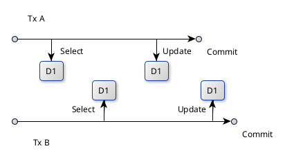
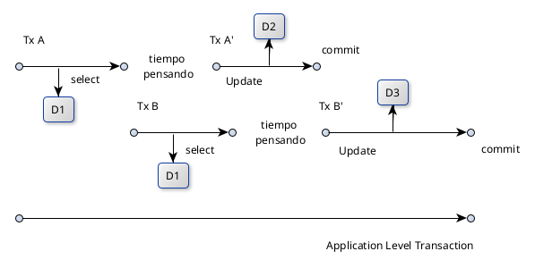
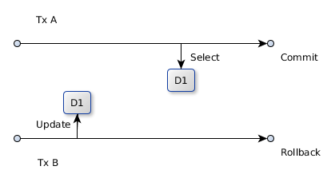
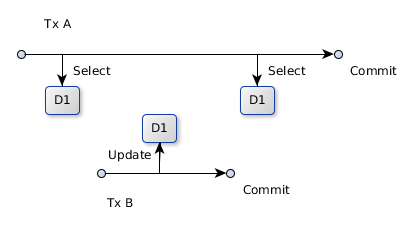
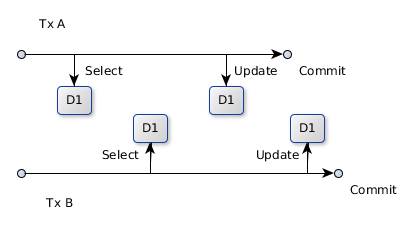
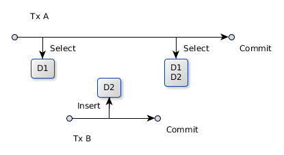

Repo: https://github.com/enriquemolinari/taller-jpahibernate
¿Quien se encarga de garantizar que la concurencia no afecte la correctitud de mi applicación?
Es decir, quien garantiza que la aplicación se comporta de la misma forma si es utilizada de forma mono-usuario vs multi-usuario?
¿La Base de Datos? o ¿la Aplicación?
¿Puedo como desarrollador desentenderme completamente total la BD se encarga de todo? ¿Tengo que escribir código de cierta forma para garantizar correctitud o simplemente delego en la BD y me desentiendo?
Nunca puedo desentenderme!
Es una combinación entre la BD y la Aplicación que puede variar segun el caso de uso que quiero implementar.
La concurrencia puede darse de dos formas:
1) Dos transacciones concurrentes, ambas leen el mismo dato, modifican y comitean en diferentes momentos. La clave es que ambas leen el mismo dato antes de que alguna Tx comitee.

La concurrencia puede darse de dos formas:
2) Dos transacciones leen y terminan. Luego modifica primero una y luego la otra. La clave es que la lectura y la modificacion se realiza en transacciones separadas.

Las base de datos gestionan la concurrencia dentro del contexto de una Transacción. Problemas del Tipo 1. Aunque tambien podemos hacernos cargo a nivel aplicación.
Para los problemas del Tipo 2 debemos hacernos cargo a nivel aplicación.
Ejemplo: Venta de pasaje/butacas de viajes en colectivo.
Veamos como generar estos dos tipos de problemas en Java con PostgreSQL.
package: orm/locking/viaje
¿Que Base de Datos estan usando? ¿Saben en que nivel de aislamiento esta ejecutándose?
PostgreSQL, Oracle y MS SQL Server por defecto usan Read Committed. MySQL y MariaDB en Repeatable Read.
Por defecto, las BDs relacionales estan configuradas relajando el aislamiento completo.
El aislamiento completo no permite ejecutar transacciones en forma concurrente. Ojo: Hablamos de MySQL con InnoDB, MyISAM no soporta Transacciones.
¿Cuáles son los problemas que podemos encontrarnos al no configurar la BD con aislamiento completo?
Dirty Read: Sucede si una transacción lee datos modificados por otra transacción que aún no comiteo.

2. Read Committed no permite esto. Bloqueando (o Snapshot Isolation) lectura/escritura sobre datos modificados.
Unrepeatable Read: Sucede si una transacción lee un dato dos veces y la segunda vez es diferente a la primera.

3. Repetable Read no permite esto.
Lost Updates o Last Commit Wins: Dos transacciones leen el mismo dato, la primera lo modifica y comitea y la segunda hace lo mismo después.

3. Repeatable read no permite esto.
Phanton Read: Ocurre cuando una transacción ejecuta una query dos veces, y la segunda vez obtiene mas datos (o menos si se borraron) que la primera.

4. Serialiable no permite esto.
Probemos ahora el mismo problema de Tipo 1 cambiando el nivel de aislamiento de la BD a REPEATABLE READ.
package: orm/locking/viaje
Para controlar la concurrencia existen dos estratégias:
¿Cómo resolvemos el problema de la compra de pasajes en una BD en READ COMMITED?
En forma pesimista utilizando locks.
package:
orm/locking/viaje/pesimista.
En forma optimista utilizando versionado.
package:
orm/locking/viaje/optimista.
High Performance Java Persistence (Vlad Mihalcea)